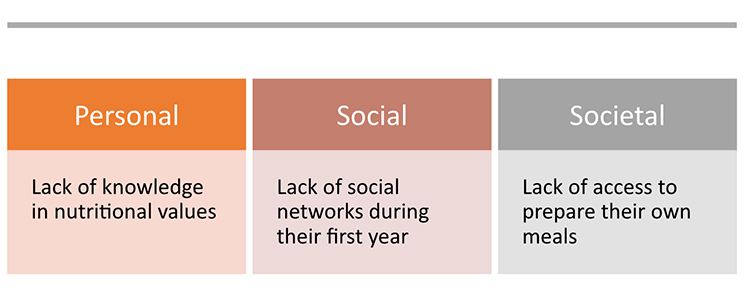

Interaction Design Project
MPlate: Make better food selections
Background: According to Journal of Nutrition and Human Health, the transition to college gives students more freedom to choose what to eat but could also lead to bad or good eating habits among those students. First year college students who often face a higher risk of developing unhealthy eating habits, making food selections based on taste, convenience and cost.
 Design Concept: MyPlate icon is “a simple, yet powerful, visual cue to prompt consumers to think about their food choices across food groups and to build a healthy plate at meal times.”
--- Journal of Nutrition Education and Behavior.
Since Harvard healthy plate is a newer version of Myplate so I decided to use this model.
Surveys: To understand the problem better, I created a survey and received 25 valid responses from freshmen at the University of Michigan.
I was able to see some eating patterns that Freshmen tend to have. This process helped me define the problem and target the audience that I hoped to further interview with.
Interviews: I selected 3 students who indicated that they don’t prepare meals and make unhealthy snack choices for further interviews. I asked them about food access, what resources they had used to keep them healthy, and their perception on the role of social support in healthy diets.
I showed them the concepts of my sketches and gained feedbacks on what aspects they liked. Combining my research data, I presented my findings through personas: